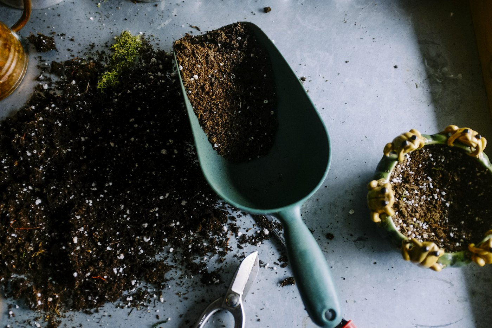

Illustrazione botanica
Tavole dipinte a mano e digitalizzate con cura, pronte per stampa, packaging e pagine web.
ScopriAtelier di illustrazione & design · Lucca
Siamo un piccolo studio che unisce l'acquerello al design digitale. Disegniamo identità, siti e tavole botaniche con il calore del fatto a mano e la chiarezza di un'interfaccia moderna.
Cosa facciamo
Ogni progetto nasce su carta: schizzi, macchie di prova, pigmenti. Poi lo portiamo sullo schermo senza perdere il gesto.
Tavole dipinte a mano e digitalizzate con cura, pronte per stampa, packaging e pagine web.
ScopriLoghi, palette e caratteri che raccontano chi sei con la morbidezza di un gesto, non con la rigidità di una griglia.
ScopriInterfacce chiare, veloci e accessibili, con l'anima di un quaderno d'artista sfogliato con calma.
Scopri
Il metodo
Un caffè, molte domande e un quaderno: capiamo chi sei prima di intingere il pennello.
Schizzi a matita e prove di colore su carta, condivisi con te a ogni passaggio.
Il progetto prende forma per strati: prima la luce, poi i dettagli, infine lo schermo.